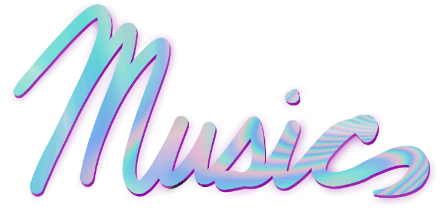

Hot Polygons
Hot Polygons is my title as a music creator. I have no educational experience on the concept of music, so my content is not very good. Here are some examples:
Hot Polygons (热多边形) - ドッグチャイドル
Hot Polygons- Fudge
Hot Polygons - Essay
Hot Polygons - e11even
Hot Polygons - Oegamiom
Monopoly Ninjago Music I Listen To
Here I will list the type of music I Like, and maybe even why I like it!
This will be a bit difficult since I listen to all kinds of music.
Some of the bands I would say I am most fond of are: Boards of Canada The Paper Chase The Knife The Beach Boys Macintosh Plus Pendulum
For music relating to Jeffrey Dahmer, click here.